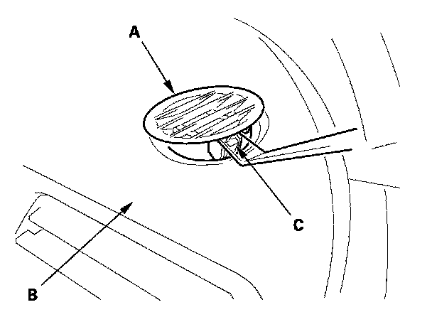

Side Defogger Vent Trim
Side Defogger Vent Trim Removal/InstallationNOTE: Take care not to scratch the dashboard and related pants.

1. Insert the trim tool into a gap between the side defogger vent trim (A) and the dashboard (B), and release the hook (C).
2. Install the side defogger vent trim in the reverse order of removal.